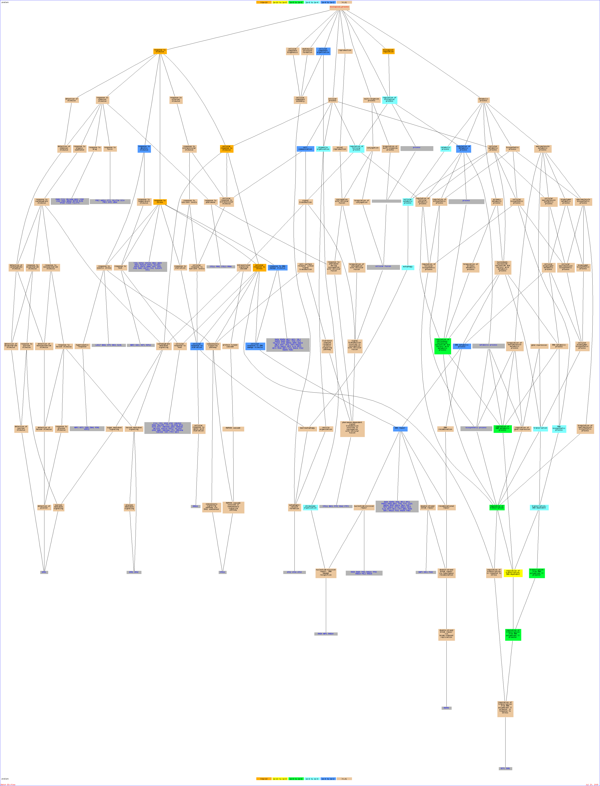

Of your input list, 621 genes are known or unknown but not ambiguous. The total number of genes used to calculate the background distribution of GO terms is 7274.Result Table| Terms from the Process Ontology of gene_association.sgd with p-value <= 0.01 | | Gene Ontology term | Cluster frequency | Genome frequency | Corrected
P-value | FDR | False
Positives | Genes annotated to the term |
|---|
| response to stimulus | 181 of 621 genes, 29.1% | 1155 of 7274 genes, 15.9% | 1.59e-15 | 0.00% | 0.00 | GPR1, RAD4, ATG2, LAS17, PHM6, TIR1, SET1, HSP42, SNF5, FIS1, RDH54, FRE2, YTP1, NBP2, SPG5, HOT1, STE11, KTR2, GAC1, RMD11, YBL046W, YOR052C, YEN1, NHA1, MOH1, MEC3, YNL305C, HSP150, HMI1, YRM1, STF2, SML1, PRI2, YJL055W, AAD10, OXR1, MIG2, YLL029W, ATG20, YAL053W, RAD53, PDS1, RAD9, RCK2, MET30, NGG1, STB5, PRR2, CSG2, CBK1, SPI1, HIR2, BDF1, PGD1, TFB1, PIF1, CUP2, ASP3-3, VPS64, NRG1, YOL063C, EXO1, SUB1, RRI2, HXT6, ABF1, TFC6, RTT101, SPA2, GCY1, SIF2, NHP6A, MRK1, UBC5, HPR5, YCR026C, GTT2, HXT7, YMR090W, SAC3, HSF1, CAD1, MGA2, GDH3, STE13, YDR506C, ATG23, ENA1, RAD24, SPO14, SSK22, DNL4, OLE1, MSN1, ARG82, EAF7, UFO1, BNI1, YKL071W, SPT20, YNL200C, HSP104, SIN3, PEP4, SCC4, ATG4, TRF5, HSP12, RPN4, YKL151C, CCW12, TFB3, YIL169C, MET28, BZZ1, HSP32, YCR079W, RAD28, GPH1, SPT16, FIT1, ELM1, RAD14, RNR3, ATG3, HSP30, SMC5, GPA2, YBR056W, SLX4, REV3, HEX3, POL2, FRE3, ITC1, ASP3-1, SIR3, MET4, CTF4, DAN4, DNA2, YMR040W, YKR049C, ASP3-2, YGP1, YGK3, ASP3-4, VPS60, SMC1, YRA1, BPH1, SSQ1, OYE3, PRM4, PTP2, DDR2, RGA2, MSH6, TRX3, HSP33, BDF2, UBX3, VID28, CTK1, UBA4, YIL077C, RAD26, PSO2, RAD54, ATG21, YLR247C, PTP3, SMP1, FRT2, YDR109C, PIH1, YDR338C, ISW2, ATG13, HTB1, POB3 | | cellular response to stress | 100 of 621 genes, 16.1% | 530 of 7274 genes, 7.3% | 3.71e-12 | 0.00% | 0.00 | RAD4, ATG2, GDH3, SET1, YDR506C, ATG23, ENA1, RAD24, SSK22, DNL4, SNF5, FIS1, RDH54, EAF7, YTP1, SPG5, SPT20, YNL200C, HSP104, STE11, SIN3, PEP4, KTR2, SCC4, ATG4, TRF5, HSP12, RPN4, RMD11, YKL151C, YOR052C, YEN1, TFB3, MOH1, YNL305C, MEC3, YCR079W, HMI1, RAD28, SPT16, GPH1, STF2, PRI2, RAD14, RNR3, ATG3, SMC5, REV3, SLX4, YBR056W, HEX3, POL2, ATG20, YAL053W, RAD53, PDS1, ITC1, ASP3-1, SIR3, RAD9, CTF4, RCK2, DNA2, YMR040W, YKR049C, ASP3-2, YGP1, STB5, ASP3-4, SMC1, YRA1, SPI1, PTP2, BDF1, MSH6, TFB1, BDF2, PIF1, ASP3-3, UBX3, RAD26, PSO2, RAD54, EXO1, ATG21, PTP3, SUB1, HXT6, ABF1, RTT101, ATG13, NHP6A, SIF2, HTB1, HPR5, YCR026C, POB3, YMR090W, HXT7, SAC3 | | cellular response to stimulus | 103 of 621 genes, 16.6% | 554 of 7274 genes, 7.6% | 3.73e-12 | 0.00% | 0.00 | GPR1, RAD4, ATG2, GDH3, SET1, YDR506C, ATG23, ENA1, RAD24, SSK22, DNL4, SNF5, FIS1, RDH54, EAF7, YTP1, SPG5, SPT20, YNL200C, HSP104, STE11, SIN3, PEP4, KTR2, SCC4, ATG4, TRF5, HSP12, RPN4, RMD11, YKL151C, YOR052C, YEN1, TFB3, MOH1, YNL305C, MEC3, YCR079W, HMI1, RAD28, SPT16, GPH1, STF2, PRI2, RAD14, RNR3, MIG2, ATG3, SMC5, GPA2, REV3, SLX4, YBR056W, HEX3, POL2, ATG20, YAL053W, RAD53, PDS1, ITC1, ASP3-1, SIR3, RAD9, CTF4, RCK2, DNA2, YMR040W, YKR049C, ASP3-2, YGP1, STB5, ASP3-4, SMC1, YRA1, SPI1, PTP2, BDF1, MSH6, TFB1, BDF2, PIF1, ASP3-3, UBX3, RAD26, PSO2, RAD54, EXO1, ATG21, PTP3, SUB1, HXT6, ABF1, RTT101, ATG13, NHP6A, SIF2, HTB1, HPR5, YCR026C, POB3, YMR090W, HXT7, SAC3 | | response to stress | 135 of 621 genes, 21.7% | 829 of 7274 genes, 11.4% | 7.15e-12 | 0.00% | 0.00 | RAD4, ATG2, LAS17, TIR1, SET1, HSP42, SNF5, FIS1, RDH54, YTP1, NBP2, SPG5, HOT1, STE11, KTR2, GAC1, RMD11, YOR052C, YEN1, NHA1, MOH1, MEC3, YNL305C, HSP150, HMI1, STF2, SML1, PRI2, OXR1, ATG20, YAL053W, RAD53, PDS1, RAD9, RCK2, STB5, SPI1, BDF1, TFB1, PIF1, ASP3-3, YOL063C, EXO1, SUB1, HXT6, ABF1, RTT101, GCY1, SIF2, NHP6A, MRK1, UBC5, HPR5, YCR026C, HXT7, YMR090W, SAC3, HSF1, MGA2, GDH3, YDR506C, ATG23, RAD24, ENA1, DNL4, SSK22, MSN1, EAF7, UFO1, BNI1, SPT20, YNL200C, HSP104, SIN3, PEP4, SCC4, ATG4, TRF5, RPN4, HSP12, YKL151C, TFB3, HSP32, BZZ1, YCR079W, RAD28, GPH1, SPT16, FIT1, ELM1, RAD14, RNR3, ATG3, HSP30, SMC5, YBR056W, SLX4, REV3, HEX3, POL2, ASP3-1, ITC1, SIR3, CTF4, DAN4, DNA2, YKR049C, YMR040W, ASP3-2, YGP1, YGK3, ASP3-4, SMC1, YRA1, SSQ1, PTP2, DDR2, MSH6, TRX3, HSP33, BDF2, UBX3, CTK1, UBA4, RAD26, PSO2, ATG21, RAD54, PTP3, YLR247C, SMP1, FRT2, HTB1, ATG13, POB3 | | biological regulation | 227 of 621 genes, 36.6% | 1731 of 7274 genes, 23.8% | 5.91e-11 | 0.00% | 0.00 | GPR1, RAD4, TPM1, YPT1, TOS8, LAS17, SET1, SDP1, BIR1, SYT1, SET3, SNF5, IWR1, PRP28, NBP2, HOT1, STE11, UBC6, GAC1, MRH1, CEG1, MTH1, EMP24, NHA1, MEC3, YAP5, YRM1, ESC8, IWS1, STF2, SML1, CTR9, TSC11, IKI3, TEL2, MIG2, YRF1-5, YLL029W, GSP2, MED7, YRF1-7, RAD53, CDC55, ESC1, RAD9, RCK2, MET30, ARO80, KIC1, CYR1, NGG1, MSS11, STB5, PRR2, STP2, SPC72, TFC4, CSG2, CBK1, PCL10, GIN4, HIR2, BDF1, PGD1, TFB1, HDA3, PIF1, CUP2, SPP1, SWR1, MKS1, CYC8, NRG1, YOL063C, EXO1, YER129W, SUB1, RRI2, GZF3, SPF1, ABF1, TFC6, RTT101, SOM1, SPA2, ZDS2, IPL1, SIF2, NHP6A, YPL216W, MRK1, UBC5, HPR5, SPT21, TOF2, YGL140C, SPT3, GTT2, SAC3, NUP116, HSF1, MGA2, CAD1, VID30, PMP3, HHO1, CDC53, ATG23, RAD24, SSK22, MSN1, TAF2, ARG82, TFG1, EAF7, IRA1, YRF1-3, JNM1, PPZ2, ZDS1, BNI1, SPT20, CLB5, PCL1, LEU3, PKH2, SIN3, YDR026C, NOT3, GSC2, RPN4, TFB3, SIR1, YIL169C, MET28, YCR079W, BDP1, KCC4, DAL81, PSK1, SPT16, ZAP1, RRN3, YTA7, ELM1, BRF1, CCC2, HSP30, GPA2, SPT7, BUB1, SLX4, MPS1, SAP190, OSH3, HEX3, POL2, PEX15, YRF1-4, DYN1, FAP1, MSB4, SMF3, BUR6, TOP1, COT1, TFP3, FRE3, VPS21, SPH1, AVO2, ITC1, PIG2, SIR3, MET4, PDC1, AVO1, TFC3, DNA2, FHL1, YRF1-1, MAD3, CEF1, VPS27, YRB2, BUD3, BOI2, SUA7, CST6, CMK2, SWI3, YRA1, VMA4, PRM4, SSQ1, PTP2, COS3, HAL5, RGA2, TRX3, VPS4, BDF2, FYV10, GIS4, VID28, CWP2, SLM1, CTK1, SAS5, UBA4, RAD54, ISW1, PTP3, SMP1, VCX1, RFM1, PIH1, DIA1, ISW2, BRE4, ATG13, HTB1, POB3, SPP41, GPG1, KIP3, IOC4 | | regulation of transcription, DNA-dependent | 104 of 621 genes, 16.7% | 629 of 7274 genes, 8.6% | 7.12e-09 | 0.00% | 0.00 | HSF1, MGA2, CAD1, HHO1, TOS8, SET1, SET3, MSN1, SNF5, IWR1, TAF2, TFG1, ARG82, EAF7, ZDS1, SPT20, HOT1, LEU3, SIN3, NOT3, GAC1, RPN4, CEG1, TFB3, SIR1, MET28, MEC3, BDP1, YAP5, DAL81, YRM1, SPT16, ESC8, IWS1, ZAP1, CTR9, RRN3, BRF1, IKI3, MIG2, SPT7, YLL029W, HEX3, POL2, FAP1, BUR6, MED7, TOP1, ITC1, SIR3, MET4, ESC1, RAD9, TFC3, ARO80, MET30, FHL1, NGG1, MSS11, STB5, PRR2, YRB2, STP2, SUA7, TFC4, CST6, YRA1, SWI3, HIR2, BDF1, PGD1, TFB1, HDA3, BDF2, CUP2, SPP1, VID28, SAS5, CTK1, SWR1, MKS1, CYC8, NRG1, YOL063C, ISW1, SMP1, SUB1, RFM1, GZF3, ISW2, ABF1, TFC6, ZDS2, NHP6A, HTB1, SIF2, YPL216W, POB3, SPP41, SPT21, TOF2, IOC4, SAC3, SPT3 | | regulation of transcription | 106 of 621 genes, 17.1% | 654 of 7274 genes, 9.0% | 1.53e-08 | 0.00% | 0.00 | HSF1, MGA2, CAD1, HHO1, TOS8, SET1, SET3, MSN1, SNF5, IWR1, TAF2, TFG1, ARG82, EAF7, ZDS1, SPT20, HOT1, LEU3, SIN3, YDR026C, NOT3, GAC1, RPN4, CEG1, TFB3, SIR1, MET28, MEC3, BDP1, YAP5, DAL81, YRM1, SPT16, ESC8, IWS1, ZAP1, CTR9, RRN3, BRF1, IKI3, MIG2, SPT7, YLL029W, HEX3, POL2, FAP1, BUR6, MED7, TOP1, ITC1, SIR3, MET4, ESC1, RAD9, TFC3, ARO80, MET30, FHL1, NGG1, MSS11, STB5, CEF1, PRR2, YRB2, STP2, SUA7, TFC4, CST6, SWI3, YRA1, HIR2, BDF1, PGD1, TFB1, HDA3, BDF2, CUP2, SPP1, VID28, SAS5, CTK1, SWR1, MKS1, CYC8, NRG1, YOL063C, ISW1, SMP1, SUB1, RFM1, GZF3, ISW2, ABF1, TFC6, ZDS2, NHP6A, HTB1, SIF2, YPL216W, POB3, SPP41, SPT21, TOF2, IOC4, SAC3, SPT3 | | regulation of RNA metabolic process | 104 of 621 genes, 16.7% | 638 of 7274 genes, 8.8% | 1.74e-08 | 0.00% | 0.00 | HSF1, MGA2, CAD1, HHO1, TOS8, SET1, SET3, MSN1, SNF5, IWR1, TAF2, TFG1, ARG82, EAF7, ZDS1, SPT20, HOT1, LEU3, SIN3, NOT3, GAC1, RPN4, CEG1, TFB3, SIR1, MET28, MEC3, BDP1, YAP5, DAL81, YRM1, SPT16, ESC8, IWS1, ZAP1, CTR9, RRN3, BRF1, IKI3, MIG2, SPT7, YLL029W, HEX3, POL2, FAP1, BUR6, MED7, TOP1, ITC1, SIR3, MET4, ESC1, RAD9, TFC3, ARO80, MET30, FHL1, NGG1, MSS11, STB5, PRR2, YRB2, STP2, SUA7, TFC4, CST6, YRA1, SWI3, HIR2, BDF1, PGD1, TFB1, HDA3, BDF2, CUP2, SPP1, VID28, SAS5, CTK1, SWR1, MKS1, CYC8, NRG1, YOL063C, ISW1, SMP1, SUB1, RFM1, GZF3, ISW2, ABF1, TFC6, ZDS2, NHP6A, HTB1, SIF2, YPL216W, POB3, SPP41, SPT21, TOF2, IOC4, SAC3, SPT3 | | regulation of nucleobase, nucleoside, nucleotide and nucleic acid metabolic process | 111 of 621 genes, 17.9% | 702 of 7274 genes, 9.7% | 2.31e-08 | 0.00% | 0.00 | HSF1, MGA2, CAD1, HHO1, TOS8, SET1, SET3, MSN1, SNF5, IWR1, TAF2, TFG1, ARG82, EAF7, IRA1, ZDS1, CLB5, SPT20, HOT1, LEU3, SIN3, YDR026C, NOT3, GAC1, RPN4, CEG1, TFB3, SIR1, MET28, MEC3, BDP1, YAP5, DAL81, YRM1, SPT16, ESC8, IWS1, ZAP1, SML1, CTR9, RRN3, BRF1, IKI3, MIG2, GPA2, SPT7, YLL029W, HEX3, POL2, FAP1, BUR6, MED7, TOP1, ITC1, SIR3, MET4, ESC1, RAD9, TFC3, ARO80, MET30, FHL1, NGG1, MSS11, STB5, CEF1, PRR2, YRB2, STP2, SUA7, TFC4, CST6, SWI3, YRA1, HIR2, BDF1, PGD1, TFB1, HDA3, BDF2, PIF1, CUP2, SPP1, VID28, SAS5, CTK1, SWR1, MKS1, CYC8, NRG1, YOL063C, ISW1, SMP1, SUB1, RFM1, GZF3, ISW2, ABF1, TFC6, ZDS2, NHP6A, HTB1, SIF2, YPL216W, POB3, SPP41, SPT21, TOF2, IOC4, SAC3, SPT3 | | regulation of transcription from RNA polymerase II promoter | 55 of 621 genes, 8.9% | 268 of 7274 genes, 3.7% | 4.26e-07 | 0.00% | 0.00 | HSF1, ITC1, MGA2, CAD1, MET4, SET1, RAD9, MET30, ARO80, NGG1, MSS11, STB5, PRR2, STP2, TAF2, ARG82, EAF7, HOT1, SPT20, LEU3, HIR2, SIN3, NOT3, TFB1, HDA3, GAC1, CEG1, VID28, TFB3, MKS1, MET28, YAP5, NRG1, YOL063C, DAL81, YRM1, ISW1, SMP1, ZAP1, SUB1, IKI3, MIG2, GZF3, SPT7, ISW2, ABF1, YLL029W, HTB1, NHP6A, MED7, BUR6, TOP1, SPP41, SPT21, SPT3 | | transcription from RNA polymerase II promoter | 68 of 621 genes, 11.0% | 372 of 7274 genes, 5.1% | 6.85e-07 | 0.00% | 0.00 | HSF1, MGA2, CAD1, SET1, IWR1, TAF2, TFG1, ARG82, EAF7, HOT1, SPT20, LEU3, SIN3, NOT3, GAC1, CEG1, TFB3, REF2, MET28, YOL054W, YAP5, DAL81, YRM1, SPT16, IWS1, ZAP1, CTR9, IKI3, MIG2, SPT7, YLL029W, MED7, BUR6, TOP1, ITC1, MET4, RAD9, ARO80, MET30, FHL1, MSS11, NGG1, PRR2, STB5, STP2, SUA7, CST6, HIR2, TFB1, PGD1, HDA3, CUP2, VID28, MKS1, NRG1, YOL063C, ISW1, SMP1, SUB1, GZF3, ISW2, ABF1, HTB1, NHP6A, SPT21, SPP41, POB3, SPT3 | | regulation of biological process | 191 of 621 genes, 30.8% | 1531 of 7274 genes, 21.0% | 1.86e-06 | 0.00% | 0.00 | GPR1, RAD4, YPT1, TOS8, LAS17, SET1, SDP1, BIR1, SYT1, SET3, SNF5, IWR1, PRP28, NBP2, HOT1, STE11, UBC6, GAC1, MRH1, CEG1, MTH1, MEC3, YAP5, YRM1, ESC8, IWS1, SML1, CTR9, TSC11, IKI3, MIG2, YLL029W, GSP2, MED7, RAD53, CDC55, ESC1, RAD9, RCK2, MET30, ARO80, CYR1, NGG1, MSS11, STB5, PRR2, STP2, SPC72, TFC4, PCL10, GIN4, HIR2, BDF1, PGD1, TFB1, HDA3, PIF1, CUP2, SPP1, SWR1, MKS1, CYC8, NRG1, YOL063C, YER129W, SUB1, RRI2, GZF3, ABF1, TFC6, RTT101, SOM1, SPA2, ZDS2, IPL1, SIF2, NHP6A, YPL216W, MRK1, UBC5, SPT21, TOF2, YGL140C, SPT3, GTT2, SAC3, NUP116, HSF1, CAD1, VID30, MGA2, HHO1, CDC53, ATG23, RAD24, SSK22, MSN1, TAF2, ARG82, TFG1, IRA1, EAF7, JNM1, ZDS1, BNI1, SPT20, CLB5, PCL1, LEU3, PKH2, SIN3, YDR026C, NOT3, GSC2, RPN4, TFB3, SIR1, YIL169C, MET28, BDP1, KCC4, DAL81, PSK1, SPT16, ZAP1, RRN3, YTA7, ELM1, BRF1, SPT7, GPA2, BUB1, SLX4, MPS1, SAP190, HEX3, POL2, PEX15, DYN1, FAP1, MSB4, BUR6, TOP1, TFP3, VPS21, SPH1, ITC1, AVO2, PIG2, SIR3, MET4, PDC1, AVO1, TFC3, FHL1, MAD3, CEF1, YRB2, BUD3, BOI2, SUA7, CST6, CMK2, YRA1, SWI3, PRM4, PTP2, RGA2, TRX3, VPS4, BDF2, FYV10, GIS4, VID28, SLM1, CTK1, SAS5, RAD54, ISW1, PTP3, SMP1, RFM1, ISW2, BRE4, ATG13, HTB1, POB3, SPP41, GPG1, KIP3, IOC4 | | RNA biosynthetic process | 109 of 621 genes, 17.6% | 738 of 7274 genes, 10.1% | 2.39e-06 | 0.00% | 0.00 | HSF1, MGA2, CAD1, HHO1, TOS8, SET1, SYT1, SET3, SSK22, MSN1, SNF5, IWR1, TAF2, TFG1, ARG82, EAF7, ZDS1, SPT20, HOT1, LEU3, SIN3, NOT3, GAC1, RPN4, CEG1, TFB3, REF2, SIR1, MET28, MEC3, YOL054W, BDP1, YAP5, DAL81, YRM1, SPT16, ESC8, IWS1, ZAP1, CTR9, RRN3, PRI2, BRF1, IKI3, MIG2, SPT7, YLL029W, HEX3, POL2, FAP1, BUR6, MED7, TOP1, ITC1, SIR3, MET4, ESC1, RAD9, TFC3, ARO80, MET30, FHL1, NGG1, MSS11, STB5, PRR2, YRB2, STP2, SUA7, TFC4, CST6, SWI3, YRA1, HIR2, BDF1, PGD1, TFB1, HDA3, BDF2, CUP2, SPP1, VID28, SAS5, CTK1, SWR1, MKS1, CYC8, NRG1, YOL063C, ISW1, SMP1, SUB1, RFM1, GZF3, ISW2, ABF1, TFC6, ZDS2, NHP6A, HTB1, SIF2, YPL216W, POB3, SPP41, SPT21, TOF2, IOC4, SAC3, SPT3 | | cellular catabolic process | 126 of 621 genes, 20.3% | 901 of 7274 genes, 12.4% | 3.54e-06 | 0.00% | 0.00 | GPR1, ATE1, YNL224C, ATG2, VID30, GDH3, YGR043C, TDH1, PRC1, CNN1, CDC53, ATG23, RPN5, HEM14, ARG82, UBX7, GPM2, IRA1, SNF7, UFO1, MON1, YOS9, YPL277C, NTE1, YOL155C, PEP4, NOT3, ATG4, UBC6, YLR030W, IES2, GSC2, TRF5, YLR164W, TFB3, SIR1, YIL169C, YPL221W, HSP150, YCR079W, YAP5, RAD28, GPH1, ERR3, RPT1, APC9, YTA7, RAD14, UFD4, ATG3, SSM4, YML020W, NPL4, DDI1, REV3, SLX4, PRY1, HEX3, PEX15, ATG20, ERR2, BUR6, YDR306C, NMD2, HMG2, YPL206C, ASP3-1, SIR3, MND2, PDC1, DAN4, DCS2, ARO80, MET30, MUP3, HUL4, ASP3-2, MSS11, MAD3, ATG11, PFK26, SRL2, HSV2, ASP3-4, YDL176W, TUL1, PCL10, YOL075C, YDL133W, ERR1, YGL114W, ADY3, MSH6, UBP2, HDA3, FYV10, UBX5, ASP3-3, SPP1, UBX3, VID28, UBA4, DUR1,2, LSM3, DCP2, NCR1, RAD54, EXO1, ATG21, VTC2, PIH1, YDR338C, DUR3, ATG26, TFC6, RTT101, SOM1, GCY1, ATG13, UBC5, ULP1, UBP7, RNY1, YPL110C, PAI3, GTT2 | | organelle organization | 152 of 621 genes, 24.5% | 1153 of 7274 genes, 15.9% | 3.96e-06 | 0.00% | 0.00 | IVY1, RAD4, CRN1, ATG2, TPM1, YPT1, LAS17, SET1, BIR1, HSP42, SET3, SFI1, SNF5, FIS1, SED5, RDH54, YOR227W, MYO1, GAC1, TLG2, EMP24, MEC3, HMI1, NUP53, SML1, CTR9, TSC11, TEL2, YRF1-5, GSP2, YRF1-7, STU2, PDS1, NEO1, PEX12, MND2, CDC55, PEX13, PEX3, NGG1, ATG11, SPC72, GIN4, HIR2, BDF1, ADY3, EGT2, TFB1, HDA3, PIF1, SPP1, IRR1, SWR1, SPC110, SPC105, CYC8, EXO1, MIP1, NDL1, ABF1, RTT101, SPA2, IPL1, NHP6A, SIF2, YPL216W, HPR5, EXO84, TOF2, SPT3, SAC3, NUP116, MIM1, HSF1, HHO1, CNN1, OLE1, SNF7, EAF7, YRF1-3, BNI1, SPT20, CLB5, PCL1, SIN3, THI4, SCC4, ATG4, TRF5, KAR3, YPT11, YOR084W, TFB3, SIR1, BZZ1, KCC4, SPT16, SMC2, DSN1, APC9, RAD14, ATG3, SPT7, BUB1, MPS1, PEX5, HEX3, OSH3, POL2, PEX15, DYN1, YRF1-4, MSB4, TOP1, HMG2, SEC9, SPH1, ITC1, AVO2, SIR3, CTF4, AVO1, DNA2, YRF1-1, MAD3, YRB2, SMC1, SWI3, VMA4, SUN4, GLE1, SSO1, RGA2, VPS4, SED1, SAS5, SLM1, PEX29, SMC4, ATG21, RAD54, ISW1, VTC2, PEX30, STU1, ISW2, HTB1, AKL1, ULP1, POB3, KIP3, IOC4 | | transcription | 111 of 621 genes, 17.9% | 763 of 7274 genes, 10.5% | 4.04e-06 | 0.00% | 0.00 | HSF1, MGA2, CAD1, HHO1, TOS8, SET1, SYT1, SET3, SSK22, MSN1, SNF5, IWR1, TAF2, TFG1, ARG82, EAF7, ZDS1, SPT20, HOT1, LEU3, SIN3, YDR026C, NOT3, GAC1, RPN4, CEG1, TFB3, REF2, SIR1, MET28, MEC3, YOL054W, BDP1, YAP5, DAL81, YRM1, SPT16, ESC8, IWS1, ZAP1, CTR9, RRN3, PRI2, BRF1, IKI3, MIG2, SPT7, YLL029W, HEX3, POL2, FAP1, BUR6, MED7, TOP1, ITC1, SIR3, MET4, ESC1, RAD9, TFC3, ARO80, MET30, FHL1, NGG1, MSS11, STB5, CEF1, PRR2, YRB2, STP2, SUA7, TFC4, CST6, SWI3, YRA1, HIR2, BDF1, PGD1, TFB1, HDA3, BDF2, CUP2, SPP1, VID28, SAS5, CTK1, SWR1, MKS1, CYC8, NRG1, YOL063C, ISW1, SMP1, SUB1, RFM1, GZF3, ISW2, ABF1, TFC6, ZDS2, NHP6A, HTB1, SIF2, YPL216W, POB3, SPP41, SPT21, TOF2, IOC4, SAC3, SPT3 | | transcription, DNA-dependent | 108 of 621 genes, 17.4% | 736 of 7274 genes, 10.1% | 4.21e-06 | 0.00% | 0.00 | HSF1, MGA2, CAD1, HHO1, TOS8, SET1, SYT1, SET3, SSK22, MSN1, SNF5, IWR1, TAF2, TFG1, ARG82, EAF7, ZDS1, SPT20, HOT1, LEU3, SIN3, NOT3, GAC1, RPN4, CEG1, TFB3, REF2, SIR1, MET28, MEC3, YOL054W, BDP1, YAP5, DAL81, YRM1, SPT16, ESC8, IWS1, ZAP1, CTR9, RRN3, BRF1, IKI3, MIG2, SPT7, YLL029W, HEX3, POL2, FAP1, BUR6, MED7, TOP1, ITC1, SIR3, MET4, ESC1, RAD9, TFC3, ARO80, MET30, FHL1, NGG1, MSS11, STB5, PRR2, YRB2, STP2, SUA7, TFC4, CST6, SWI3, YRA1, HIR2, BDF1, PGD1, TFB1, HDA3, BDF2, CUP2, SPP1, VID28, SAS5, CTK1, SWR1, MKS1, CYC8, NRG1, YOL063C, ISW1, SMP1, SUB1, RFM1, GZF3, ISW2, ABF1, TFC6, ZDS2, NHP6A, HTB1, SIF2, YPL216W, POB3, SPP41, SPT21, TOF2, IOC4, SAC3, SPT3 | | catabolic process | 144 of 621 genes, 23.2% | 1080 of 7274 genes, 14.8% | 5.49e-06 | 0.00% | 0.00 | DAP2, GPR1, YNL224C, ATG2, TPM1, TDH1, ROG1, YOR022C, UBX7, GPM2, YOS9, NTE1, UBC6, YLR030W, IES2, YPL221W, HSP150, YAP5, YPS3, NPL4, DDI1, YLL029W, ATG20, ERR2, YDR306C, MND2, PEX13, MET30, ARO80, MUP3, HUL4, MSS11, ATG11, SRL2, HSV2, YDL176W, TUL1, PCL10, YOL075C, YGL114W, ADY3, HDA3, ASP3-3, SPP1, SWR1, NCR1, EXO1, SUE1, DUR3, TFC6, RTT101, SOM1, GCY1, MRK1, UBC5, UBP7, RNY1, YPL110C, GTT2, ATE1, VID30, YGR043C, GDH3, PRC1, CNN1, CDC53, STE13, ATG23, SPO14, RPN5, HEM14, ARG82, SNF7, IRA1, UFO1, MON1, YPL277C, YOL155C, PEP4, ATG4, NOT3, GSC2, TRF5, RPN4, YLR164W, TFB3, SIR1, YIL169C, YCR079W, RAD28, GPH1, ERR3, APC9, RPT1, RAD14, YTA7, UFD4, SSM4, ATG3, YML020W, SLX4, REV3, PRY1, HEX3, PEX15, BUR6, HMG2, NMD2, YPL206C, ASP3-1, SIR3, PDC1, DAN4, DCS2, ASP3-2, CHS5, MAD3, PFK26, YGK3, ASP3-4, YDL133W, ERR1, MSH6, UBP2, BDF2, FYV10, UBX5, UBX3, VID28, UBA4, LSM3, DUR1,2, DCP2, YOR059C, ATG21, RAD54, VTC2, YPS1, YDR338C, PIH1, ATG26, ATG13, ULP1, PAI3 | | regulation of cellular process | 183 of 621 genes, 29.5% | 1483 of 7274 genes, 20.4% | 1.21e-05 | 0.00% | 0.00 | GPR1, YPT1, TOS8, LAS17, SET1, SDP1, BIR1, SYT1, SET3, SNF5, IWR1, PRP28, NBP2, HOT1, STE11, GAC1, MRH1, CEG1, MTH1, MEC3, YAP5, YRM1, ESC8, IWS1, SML1, CTR9, TSC11, IKI3, MIG2, YLL029W, GSP2, MED7, RAD53, CDC55, ESC1, RAD9, RCK2, MET30, ARO80, CYR1, NGG1, MSS11, STB5, PRR2, STP2, SPC72, TFC4, PCL10, GIN4, HIR2, BDF1, PGD1, TFB1, HDA3, PIF1, CUP2, SPP1, SWR1, MKS1, CYC8, NRG1, YOL063C, YER129W, SUB1, RRI2, GZF3, ABF1, TFC6, RTT101, SOM1, SPA2, ZDS2, IPL1, SIF2, NHP6A, YPL216W, SPT21, TOF2, YGL140C, SPT3, GTT2, SAC3, NUP116, HSF1, CAD1, VID30, MGA2, HHO1, CDC53, ATG23, RAD24, SSK22, MSN1, TAF2, ARG82, TFG1, IRA1, EAF7, ZDS1, BNI1, SPT20, CLB5, PCL1, LEU3, PKH2, SIN3, YDR026C, NOT3, GSC2, RPN4, TFB3, SIR1, YIL169C, MET28, BDP1, KCC4, DAL81, PSK1, SPT16, ZAP1, RRN3, YTA7, ELM1, BRF1, SPT7, GPA2, BUB1, SLX4, MPS1, SAP190, HEX3, POL2, PEX15, FAP1, BUR6, MSB4, TOP1, TFP3, VPS21, SPH1, ITC1, AVO2, PIG2, MET4, SIR3, PDC1, AVO1, TFC3, FHL1, MAD3, CEF1, YRB2, BUD3, BOI2, SUA7, CST6, CMK2, YRA1, SWI3, PRM4, PTP2, RGA2, TRX3, VPS4, BDF2, FYV10, GIS4, VID28, CTK1, SAS5, SLM1, ISW1, PTP3, SMP1, RFM1, ISW2, BRE4, ATG13, HTB1, POB3, SPP41, GPG1, IOC4 | | chromosome organization | 68 of 621 genes, 11.0% | 401 of 7274 genes, 5.5% | 1.75e-05 | 0.00% | 0.00 | RAD4, HHO1, SET1, BIR1, SET3, SNF5, RDH54, EAF7, YRF1-3, SPT20, SIN3, SCC4, KAR3, SIR1, MEC3, SPT16, SMC2, CTR9, APC9, RAD14, TEL2, SPT7, YRF1-5, BUB1, MPS1, HEX3, POL2, YRF1-4, DYN1, TOP1, YRF1-7, PDS1, ITC1, MND2, SIR3, CTF4, DNA2, YRF1-1, NGG1, YRB2, SPC72, SMC1, SWI3, HIR2, BDF1, HDA3, PIF1, IRR1, SPP1, SAS5, SWR1, CYC8, SMC4, EXO1, RAD54, ISW1, ISW2, ABF1, IPL1, NHP6A, SIF2, HTB1, YPL216W, HPR5, POB3, TOF2, SPT3, IOC4 | | regulation of biological quality | 72 of 621 genes, 11.6% | 440 of 7274 genes, 6.0% | 2.98e-05 | 0.00% | 0.00 | GPR1, TPM1, YPT1, PMP3, SET1, BIR1, ARG82, YRF1-3, PPZ2, BNI1, STE11, GSC2, EMP24, NHA1, MEC3, KCC4, ZAP1, TSC11, ELM1, CCC2, TEL2, GPA2, YRF1-5, SLX4, BUB1, MPS1, OSH3, HEX3, YRF1-4, SMF3, COT1, YRF1-7, TFP3, FRE3, AVO2, SPH1, CDC55, AVO1, DNA2, YRF1-1, KIC1, MSS11, VPS27, CSG2, CBK1, VMA4, SSQ1, PRM4, COS3, HAL5, RGA2, TRX3, VPS4, PIF1, GIS4, CWP2, CTK1, SLM1, UBA4, NRG1, EXO1, RAD54, VCX1, PIH1, DIA1, SPF1, SOM1, IPL1, SPA2, HPR5, GTT2, SPT3 | | autophagy | 48 of 621 genes, 7.7% | 247 of 7274 genes, 3.4% | 3.70e-05 | 0.00% | 0.00 | GPR1, YNL224C, ATG2, CNN1, ATG23, MAD3, ATG11, HEM14, ARG82, IRA1, SRL2, HSV2, YDL176W, MON1, PCL10, YOL075C, YDL133W, YGL114W, PEP4, ADY3, ATG4, YLR030W, IES2, HDA3, SPP1, TFB3, SIR1, YCR079W, YAP5, RAD28, RAD54, ATG21, VTC2, RAD14, PIH1, ATG3, YML020W, DUR3, REV3, ATG26, TFC6, RTT101, ATG13, PEX15, ATG20, BUR6, HMG2, GTT2 | | vacuolar protein catabolic process | 30 of 621 genes, 4.8% | 120 of 7274 genes, 1.6% | 4.99e-05 | 0.00% | 0.00 | ASP3-3, VID28, ATG2, VID30, GDH3, TDH1, YIL169C, PRC1, YPL221W, DAN4, HSP150, NCR1, MUP3, YTA7, IRA1, YDR338C, ASP3-4, MON1, PCL10, PRY1, SOM1, YPL277C, ATG13, YOL155C, PEP4, ADY3, UBP7, GSC2, PAI3, GTT2 | | negative regulation of metabolic process | 51 of 621 genes, 8.2% | 283 of 7274 genes, 3.9% | 0.00017 | 0.00% | 0.00 | RAD4, ITC1, VID30, SIR3, HHO1, SET1, RAD9, ESC1, PRR2, YRB2, ARG82, IRA1, JNM1, ZDS1, PCL10, SIN3, TFB1, HDA3, GAC1, FYV10, PIF1, SPP1, VID28, SAS5, TFB3, MKS1, SIR1, CYC8, MEC3, RAD54, ESC8, SML1, RFM1, MIG2, GZF3, ISW2, BUB1, SLX4, ABF1, YLL029W, ZDS2, HTB1, SIF2, POL2, DYN1, BUR6, TOP1, SPP41, RAD53, TOF2, KIP3 | | cellular protein catabolic process | 60 of 621 genes, 9.7% | 357 of 7274 genes, 4.9% | 0.00018 | 0.00% | 0.00 | ATE1, ATG2, VID30, GDH3, MND2, TDH1, PRC1, DAN4, CDC53, MET30, MUP3, HUL4, RPN5, UBX7, IRA1, SNF7, ASP3-4, UFO1, TUL1, MON1, PCL10, YOS9, YPL277C, YOL155C, PEP4, ADY3, ATG4, UBC6, UBP2, GSC2, FYV10, UBX5, ASP3-3, UBX3, VID28, UBA4, YIL169C, YPL221W, HSP150, NCR1, RPT1, APC9, YTA7, UFD4, YDR338C, ATG3, SSM4, NPL4, DDI1, PRY1, RTT101, SOM1, HEX3, ATG13, UBC5, ULP1, YDR306C, UBP7, PAI3, GTT2 | | cell communication | 62 of 621 genes, 10.0% | 374 of 7274 genes, 5.1% | 0.00018 | 0.00% | 0.00 | GPR1, HSF1, VPS21, SPH1, AVO2, ASP3-1, ATG2, YPT1, CDC55, SDP1, RAD9, AVO1, RCK2, VPS17, ATG23, ENA1, SYT1, SPO14, RAD24, ASP3-2, CYR1, SSK22, BUD3, BOI2, IRA1, ASP3-4, BNI1, CMK2, SPT20, PTP2, STE11, PKH2, PEP4, RGA2, ATG4, RMD11, ASP3-3, GIS4, SLM1, MTH1, MKS1, YIL169C, MEC3, YCR079W, ATG21, PSK1, PTP3, TSC11, RRI2, ATG3, MIG2, GPA2, SAP190, SPA2, ATG13, SIF2, PEX15, GSP2, ATG20, MSB4, YCR026C, GPG1 | | DNA repair | 46 of 621 genes, 7.4% | 244 of 7274 genes, 3.4% | 0.00018 | 0.00% | 0.00 | PDS1, RAD4, SIR3, CTF4, RAD9, DNA2, RAD24, DNL4, SNF5, RDH54, EAF7, SMC1, YRA1, SIN3, BDF1, SCC4, MSH6, TFB1, TRF5, RPN4, BDF2, PIF1, YEN1, TFB3, MEC3, RAD26, RAD28, HMI1, PSO2, RAD54, EXO1, SPT16, PRI2, RAD14, SMC5, SLX4, REV3, ABF1, HEX3, NHP6A, HTB1, POL2, HPR5, POB3, RAD53, SAC3 | | cellular component organization | 207 of 621 genes, 33.3% | 1792 of 7274 genes, 24.6% | 0.00022 | 0.00% | 0.00 | IVY1, RAD4, CRN1, ATG2, TPM1, YPT1, LAS17, SET1, BIR1, MUD2, HSP42, SET3, SFI1, SNF5, FIS1, SED5, RDH54, YOR227W, PRP28, MYO1, DON1, GAC1, TLG2, EMP24, MEC3, YPL221W, HSP150, HMI1, NUP53, ESC8, YPS3, SML1, CTR9, TSC11, TEL2, CDC11, YRF1-5, YLR194C, GSP2, YRF1-7, STU2, PDS1, NEO1, PEX12, MND2, CDC55, PEX13, KIC1, PEX3, SCW10, NGG1, ATG11, SPC72, HSV2, TFC4, CBK1, GIN4, HIR2, BDF1, SLU7, ADY3, EGT2, TFB1, HDA3, PIF1, CUP2, SPP1, IRR1, SWR1, SPC110, SPC105, CYC8, EXO1, MIP1, OSH2, NDL1, SUB1, ABF1, TFC6, RTT101, SPA2, ZDS2, IPL1, SIF2, NHP6A, YPL216W, UBC5, HPR5, EXO84, RNY1, TOF2, SPT3, SAC3, NUP116, MIM1, HSF1, ERG3, HHO1, CNN1, SPO14, OLE1, TAF2, TFG1, EAF7, SNF7, YRF1-3, ZDS1, BNI1, SPT20, CLB5, PCL1, YOL155C, SIN3, PEP4, THI4, SCC4, ATG4, GSC2, TRF5, KAR3, YPT11, YOR084W, CCW12, TFB3, REF2, SIR1, BZZ1, BDP1, KCC4, SPT16, SMC2, DSN1, APC9, ELM1, RAD14, BRF1, ATG3, SPT7, BUB1, MPS1, OSH3, PEX5, HEX3, POL2, PEX15, YRF1-4, DYN1, MSB4, TOP1, HMG2, SEC9, VPS21, CUS1, SPH1, AVO2, ITC1, SIR3, CTF4, AVO1, TFC3, DNA2, YRF1-1, CHS5, MAD3, YRB2, BUD3, BOI2, SUA7, SMC1, CST6, SWI3, BPH1, VMA4, SUN4, AKR2, GLE1, SSO1, RGA2, VPS4, BDF2, SED1, SBE2, CWP2, SLM1, SAS5, PEX29, SMC4, RAD54, ATG21, ISW1, VTC2, PEX30, SNU114, STU1, ISW2, ATG26, BRE4, ATG13, HTB1, AKL1, ULP1, CHS1, POB3, SPO71, ECM30, KIP3, IOC4 | | cellular response to DNA damage stimulus | 47 of 621 genes, 7.6% | 256 of 7274 genes, 3.5% | 0.00031 | 0.00% | 0.00 | PDS1, RAD4, SIR3, CTF4, RAD9, DNA2, RAD24, DNL4, SNF5, RDH54, EAF7, SMC1, YRA1, SIN3, BDF1, SCC4, MSH6, TFB1, TRF5, RPN4, BDF2, PIF1, YEN1, TFB3, MEC3, RAD26, RAD28, HMI1, PSO2, RAD54, EXO1, SPT16, PRI2, RAD14, SMC5, SLX4, REV3, ABF1, RTT101, HEX3, NHP6A, HTB1, POL2, HPR5, POB3, RAD53, SAC3 | | negative regulation of biological process | 61 of 621 genes, 9.8% | 376 of 7274 genes, 5.2% | 0.00051 | 0.00% | 0.00 | HSF1, RAD4, ITC1, VID30, SIR3, HHO1, CDC55, SET1, RAD9, ESC1, AVO1, SET3, SSK22, MAD3, PRR2, YRB2, ARG82, IRA1, JNM1, ZDS1, PCL10, SIN3, TFB1, HDA3, GAC1, FYV10, PIF1, SPP1, VID28, SAS5, TFB3, MKS1, SIR1, CYC8, MEC3, RAD54, ESC8, SML1, RRI2, RFM1, MIG2, GZF3, ISW2, BUB1, SLX4, ABF1, MPS1, RTT101, YLL029W, ZDS2, HTB1, SIF2, POL2, DYN1, BUR6, TOP1, SPP41, SPT21, KIP3, RAD53, TOF2 | | response to DNA damage stimulus | 51 of 621 genes, 8.2% | 293 of 7274 genes, 4.0% | 0.00053 | 0.00% | 0.00 | PDS1, RAD4, SIR3, CTF4, RAD9, DNA2, RAD24, DNL4, SNF5, RDH54, EAF7, UFO1, SMC1, YRA1, SIN3, BDF1, SCC4, MSH6, TFB1, TRF5, RPN4, BDF2, PIF1, CTK1, YEN1, TFB3, MEC3, RAD26, RAD28, HMI1, PSO2, YOL063C, RAD54, EXO1, SPT16, SML1, PRI2, RAD14, SMC5, SLX4, REV3, ABF1, RTT101, HEX3, NHP6A, HTB1, POL2, HPR5, POB3, RAD53, SAC3 | | negative regulation of biosynthetic process | 42 of 621 genes, 6.8% | 223 of 7274 genes, 3.1% | 0.00066 | 0.00% | 0.00 | ITC1, VID30, SIR3, SET1, RAD9, ESC1, PRR2, YRB2, ARG82, IRA1, ZDS1, PCL10, SIN3, TFB1, HDA3, GAC1, FYV10, PIF1, SPP1, VID28, SAS5, TFB3, MKS1, SIR1, CYC8, MEC3, ESC8, SML1, RFM1, MIG2, GZF3, ISW2, ABF1, YLL029W, ZDS2, HTB1, SIF2, POL2, BUR6, TOP1, SPP41, TOF2 | | negative regulation of cellular biosynthetic process | 42 of 621 genes, 6.8% | 223 of 7274 genes, 3.1% | 0.00066 | 0.00% | 0.00 | ITC1, VID30, SIR3, SET1, RAD9, ESC1, PRR2, YRB2, ARG82, IRA1, ZDS1, PCL10, SIN3, TFB1, HDA3, GAC1, FYV10, PIF1, SPP1, VID28, SAS5, TFB3, MKS1, SIR1, CYC8, MEC3, ESC8, SML1, RFM1, MIG2, GZF3, ISW2, ABF1, YLL029W, ZDS2, HTB1, SIF2, POL2, BUR6, TOP1, SPP41, TOF2 | | regulation of metabolic process | 147 of 621 genes, 23.7% | 1200 of 7274 genes, 16.5% | 0.00097 | 0.00% | 0.00 | RAD4, TOS8, SET1, SET3, SNF5, IWR1, PRP28, NBP2, HOT1, STE11, UBC6, GAC1, MRH1, CEG1, MEC3, YAP5, YRM1, ESC8, IWS1, SML1, CTR9, TSC11, IKI3, MIG2, YLL029W, MED7, RAD53, ESC1, RAD9, MET30, ARO80, NGG1, MSS11, STB5, PRR2, STP2, TFC4, PCL10, HIR2, BDF1, PGD1, TFB1, HDA3, PIF1, CUP2, SPP1, SWR1, MKS1, CYC8, NRG1, YOL063C, YER129W, SUB1, GZF3, ABF1, TFC6, ZDS2, NHP6A, SIF2, MRK1, YPL216W, UBC5, SPT21, TOF2, YGL140C, SPT3, SAC3, NUP116, HSF1, CAD1, VID30, MGA2, HHO1, ATG23, SSK22, MSN1, ARG82, TFG1, TAF2, IRA1, EAF7, JNM1, ZDS1, SPT20, CLB5, PCL1, LEU3, SIN3, YDR026C, NOT3, RPN4, TFB3, SIR1, MET28, BDP1, DAL81, SPT16, ZAP1, RRN3, ELM1, YTA7, BRF1, SPT7, GPA2, BUB1, SLX4, SAP190, HEX3, POL2, DYN1, BUR6, FAP1, TOP1, TFP3, ITC1, PIG2, MET4, SIR3, PDC1, TFC3, FHL1, CEF1, YRB2, SUA7, CST6, YRA1, SWI3, PTP2, VPS4, BDF2, FYV10, VID28, CTK1, SAS5, RAD54, ISW1, PTP3, SMP1, RFM1, ISW2, BRE4, ATG13, HTB1, SPP41, POB3, KIP3, IOC4 | | -negative regulation of macromolecule metabolic process | 47 of 621 genes, 7.6% | 267 of 7274 genes, 3.7% | 0.00110 | 0.00% | 0.00 | RAD4, ITC1, SIR3, HHO1, SET1, RAD9, ESC1, PRR2, YRB2, ARG82, JNM1, ZDS1, PCL10, SIN3, TFB1, HDA3, GAC1, PIF1, SPP1, SAS5, TFB3, MKS1, SIR1, CYC8, MEC3, RAD54, ESC8, SML1, RFM1, MIG2, GZF3, ISW2, BUB1, SLX4, ABF1, YLL029W, ZDS2, HTB1, SIF2, POL2, DYN1, BUR6, TOP1, SPP41, RAD53, TOF2, KIP3 | | negative regulation of macromolecule metabolic process | 47 of 621 genes, 7.6% | 267 of 7274 genes, 3.7% | 0.00110 | 0.00% | 0.00 | RAD4, ITC1, SIR3, HHO1, SET1, RAD9, ESC1, PRR2, YRB2, ARG82, JNM1, ZDS1, PCL10, SIN3, TFB1, HDA3, GAC1, PIF1, SPP1, SAS5, TFB3, MKS1, SIR1, CYC8, MEC3, RAD54, ESC8, SML1, RFM1, MIG2, GZF3, ISW2, BUB1, SLX4, ABF1, YLL029W, ZDS2, HTB1, SIF2, POL2, DYN1, BUR6, TOP1, SPP41, RAD53, TOF2, KIP3 | | response to abiotic stimulus | 53 of 621 genes, 8.5% | 317 of 7274 genes, 4.4% | 0.00117 | 0.00% | 0.00 | HSF1, ITC1, MGA2, GDH3, LAS17, RCK2, YDR506C, YMR040W, YKR049C, ENA1, SSK22, YGP1, MSN1, FIS1, YTP1, NBP2, BNI1, SPG5, HOT1, YNL200C, BPH1, SPI1, HSP104, PTP2, STE11, KTR2, HSP12, GAC1, BDF2, UBX3, YKL151C, YOR052C, NHA1, MOH1, YNL305C, BZZ1, NRG1, GPH1, PTP3, SMP1, STF2, SUB1, YDR109C, ELM1, PIH1, RNR3, HXT6, YBR056W, TFC6, GCY1, YAL053W, HXT7, YMR090W | | cellular response to starvation | 16 of 621 genes, 2.6% | 48 of 7274 genes, 0.7% | 0.00118 | 0.00% | 0.00 | ASP3-3, ASP3-4, ASP3-1, ATG3, ATG2, ATG13, YCR079W, ATG23, PEP4, ATG20, ATG21, ENA1, ASP3-2, ATG4, YCR026C, RMD11 | | cellular biopolymer catabolic process | 73 of 621 genes, 11.8% | 492 of 7274 genes, 6.8% | 0.00130 | 0.00% | 0.00 | ATE1, ATG2, VID30, GDH3, TDH1, PRC1, CDC53, RPN5, UBX7, IRA1, SNF7, UFO1, MON1, YOS9, YPL277C, YOL155C, PEP4, NOT3, ATG4, UBC6, GSC2, TRF5, YIL169C, YPL221W, HSP150, GPH1, RPT1, APC9, YTA7, UFD4, ATG3, SSM4, NPL4, DDI1, SLX4, PRY1, HEX3, YDR306C, NMD2, MND2, SIR3, DAN4, DCS2, MET30, MUP3, HUL4, MSS11, ASP3-4, TUL1, PCL10, ADY3, MSH6, UBP2, FYV10, UBX5, ASP3-3, UBX3, VID28, UBA4, LSM3, NCR1, DCP2, EXO1, YDR338C, RTT101, SOM1, ATG13, UBC5, ULP1, UBP7, RNY1, GTT2, PAI3 | | negative regulation of nucleobase, nucleoside, nucleotide and nucleic acid metabolic process | 39 of 621 genes, 6.3% | 211 of 7274 genes, 2.9% | 0.00276 | 0.05% | 0.02 | ITC1, SIR3, HHO1, SET1, RAD9, ESC1, PRR2, YRB2, ARG82, IRA1, ZDS1, SIN3, TFB1, HDA3, GAC1, PIF1, SPP1, SAS5, TFB3, MKS1, SIR1, CYC8, MEC3, ESC8, SML1, RFM1, MIG2, GZF3, ISW2, ABF1, ZDS2, YLL029W, HTB1, SIF2, POL2, BUR6, TOP1, SPP41, TOF2 | | negative regulation of cellular process | 54 of 621 genes, 8.7% | 335 of 7274 genes, 4.6% | 0.00296 | 0.05% | 0.02 | HSF1, ITC1, VID30, SIR3, HHO1, CDC55, SET1, RAD9, ESC1, AVO1, SET3, SSK22, MAD3, PRR2, YRB2, ARG82, IRA1, ZDS1, PCL10, SIN3, TFB1, HDA3, GAC1, FYV10, PIF1, SPP1, VID28, SAS5, TFB3, MKS1, SIR1, CYC8, MEC3, ESC8, SML1, RRI2, RFM1, MIG2, GZF3, ISW2, BUB1, ABF1, MPS1, RTT101, YLL029W, ZDS2, HTB1, SIF2, POL2, BUR6, TOP1, SPP41, SPT21, TOF2 | | negative regulation of cellular metabolic process | 43 of 621 genes, 6.9% | 244 of 7274 genes, 3.4% | 0.00313 | 0.05% | 0.02 | ITC1, VID30, SIR3, HHO1, SET1, RAD9, ESC1, PRR2, YRB2, ARG82, IRA1, ZDS1, PCL10, SIN3, TFB1, HDA3, GAC1, FYV10, PIF1, SPP1, VID28, SAS5, TFB3, MKS1, SIR1, CYC8, MEC3, ESC8, SML1, RFM1, MIG2, GZF3, ISW2, ABF1, YLL029W, ZDS2, HTB1, SIF2, POL2, BUR6, TOP1, SPP41, TOF2 | | cell growth | 22 of 621 genes, 3.5% | 89 of 7274 genes, 1.2% | 0.00384 | 0.05% | 0.02 | GPR1, SPH1, SLM1, AVO2, UBA4, TPM1, CDC55, AVO1, NRG1, KIC1, MSS11, TSC11, ELM1, BNI1, DIA1, GPA2, CBK1, SPA2, OSH3, STE11, RGA2, SPT3 | | localization | 155 of 621 genes, 25.0% | 1316 of 7274 genes, 18.1% | 0.00504 | 0.05% | 0.02 | CRN1, ATG2, TPM1, RCR2, YPT1, LAS17, BIR1, YGR130C, SYT1, PNS1, SED5, MEP1, FRE2, YBR287W, MRH1, TLG2, MTH1, EMP24, NHA1, YPL221W, NUP53, YRM1, YBR241C, IKI3, TEL2, MIG2, NPL4, DDI1, GSP2, ATG20, PXA2, YAL053W, RAD53, YDR387C, YIR003W, PDS1, NEO1, PEX12, PEX13, MUP3, PEX3, ATG11, SPC72, ESBP6, ALP1, CBK1, AVT1, YOL075C, AAC1, YGL114W, ADY3, FUN26, NCR1, VPS64, EMP46, OSH2, NDL1, AVT6, CAN1, ERF2, ZRT2, DUR3, HXT6, COG4, SPF1, ZDS2, IPL1, UBC5, EXO84, ERP5, TOF2, HXT7, SAC3, NUP116, MIM1, ERG3, PMP3, KHA1, YDR506C, ATG23, SPO14, ENA1, YDL206W, YDL199C, OLE1, YDL099W, SNF7, JNM1, ZDS1, BNI1, MON1, HSP104, PMR1, SCC4, ATG4, KAR3, YLR164W, MRL1, YPT11, BZZ1, SMC2, FIT1, CCC2, TPO2, ATG3, HSP30, BUB1, MPS1, PEX5, OSH3, PEX15, DYN1, YOR291W, SMF3, APL5, TOP1, COT1, TFP3, SEC9, FRE3, VPS21, SIR3, TFC3, VPS17, HSE1, YMR040W, CHS5, YRB2, VPS27, VPS60, YLL053C, YRA1, BPH1, VMA4, SSQ1, AKR2, GLE1, SSO1, VPS4, TRX3, SBE2, ENT5, YLR004C, SMC4, ATG21, VTC2, VCX1, YDR338C, ATG26, BRE4, ATG13, AKL1, ULP1, KIP3, ENA2 | | DNA metabolic process | 71 of 621 genes, 11.4% | 492 of 7274 genes, 6.8% | 0.00517 | 0.04% | 0.02 | RAD4, HHO1, SET1, RAD24, DNL4, SNF5, RDH54, EAF7, YRF1-3, BNI1, CLB5, SIN3, SCC4, TRF5, RPN4, YEN1, TFB3, MEC3, RAD28, HMI1, SPT16, MSC3, ESC8, SML1, PRI2, REC107, RAD14, TEL2, RNR3, SMC5, YRF1-5, REV3, SLX4, HEX3, POL2, YRF1-4, TOP1, YRF1-7, RAD53, PDS1, SPH1, MND2, SIR3, RAD9, CTF4, MET30, DNA2, YRF1-1, SMC1, CST6, YRA1, SSQ1, BDF1, TFB1, MSH6, BDF2, PIF1, RAD26, PSO2, MIP1, EXO1, RAD54, YER129W, ABF1, RTT101, IPL1, NHP6A, HTB1, HPR5, POB3, SAC3 | | cellular macromolecule catabolic process | 80 of 621 genes, 12.9% | 576 of 7274 genes, 7.9% | 0.00557 | 0.04% | 0.02 | ATE1, ATG2, VID30, GDH3, YGR043C, TDH1, PRC1, CDC53, RPN5, UBX7, GPM2, IRA1, SNF7, UFO1, MON1, YOS9, YPL277C, YOL155C, PEP4, NOT3, ATG4, UBC6, GSC2, TRF5, YIL169C, YPL221W, HSP150, GPH1, ERR3, RPT1, APC9, YTA7, UFD4, ATG3, SSM4, NPL4, DDI1, SLX4, PRY1, HEX3, ERR2, YDR306C, NMD2, MND2, SIR3, DAN4, DCS2, MET30, MUP3, HUL4, MSS11, PFK26, ASP3-4, TUL1, PCL10, ERR1, ADY3, MSH6, UBP2, FYV10, UBX5, ASP3-3, UBX3, VID28, UBA4, LSM3, NCR1, DCP2, EXO1, YDR338C, RTT101, SOM1, GCY1, ATG13, UBC5, ULP1, UBP7, RNY1, GTT2, PAI3 | | -negative regulation of macromolecule biosynthetic process | 38 of 621 genes, 6.1% | 212 of 7274 genes, 2.9% | 0.00791 | 0.04% | 0.02 | ITC1, SIR3, SET1, RAD9, ESC1, PRR2, YRB2, ARG82, ZDS1, PCL10, SIN3, TFB1, HDA3, GAC1, PIF1, SPP1, SAS5, TFB3, MKS1, SIR1, CYC8, MEC3, ESC8, SML1, RFM1, MIG2, GZF3, ISW2, ABF1, ZDS2, YLL029W, HTB1, SIF2, POL2, BUR6, TOP1, SPP41, TOF2 | | negative regulation of macromolecule biosynthetic process | 38 of 621 genes, 6.1% | 212 of 7274 genes, 2.9% | 0.00791 | 0.04% | 0.02 | ITC1, SIR3, SET1, RAD9, ESC1, PRR2, YRB2, ARG82, ZDS1, PCL10, SIN3, TFB1, HDA3, GAC1, PIF1, SPP1, SAS5, TFB3, MKS1, SIR1, CYC8, MEC3, ESC8, SML1, RFM1, MIG2, GZF3, ISW2, ABF1, ZDS2, YLL029W, HTB1, SIF2, POL2, BUR6, TOP1, SPP41, TOF2 | | -negative regulation of gene expression | 36 of 621 genes, 5.8% | 197 of 7274 genes, 2.7% | 0.00880 | 0.04% | 0.02 | ITC1, SIR3, SET1, ESC1, PRR2, YRB2, ARG82, ZDS1, SIN3, TFB1, HDA3, GAC1, SPP1, SAS5, TFB3, MKS1, SIR1, CYC8, MEC3, ESC8, RFM1, MIG2, GZF3, ISW2, SLX4, ABF1, ZDS2, YLL029W, HTB1, SIF2, POL2, BUR6, TOP1, SPP41, RAD53, TOF2 | | negative regulation of gene expression | 36 of 621 genes, 5.8% | 197 of 7274 genes, 2.7% | 0.00880 | 0.04% | 0.02 | ITC1, SIR3, SET1, ESC1, PRR2, YRB2, ARG82, ZDS1, SIN3, TFB1, HDA3, GAC1, SPP1, SAS5, TFB3, MKS1, SIR1, CYC8, MEC3, ESC8, RFM1, MIG2, GZF3, ISW2, SLX4, ABF1, ZDS2, YLL029W, HTB1, SIF2, POL2, BUR6, TOP1, SPP41, RAD53, TOF2 |
Of your input list, 621 genes are known or unknown but not ambiguous. The total number of genes used to calculate the background distribution of GO terms is 7274.
Nodes in the graph are color-coded according to their p-value. Genes in the GO tree are associated with the GO term(s) to which they are directly annotated. To control the graph size, only significant hits with a p-value <= 0.01 and terms descended from them are included.

|
|


{kind=link}
{kind=link}